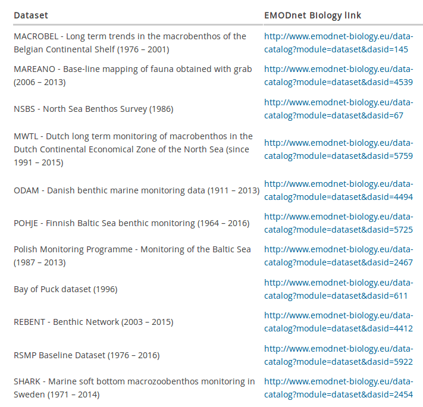
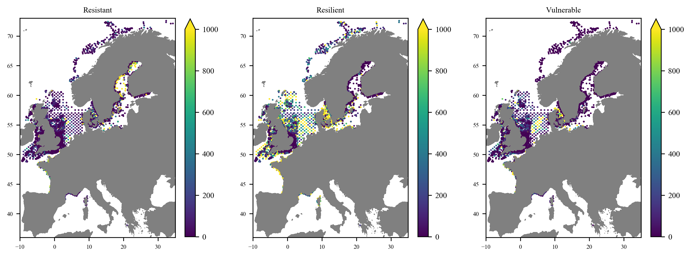
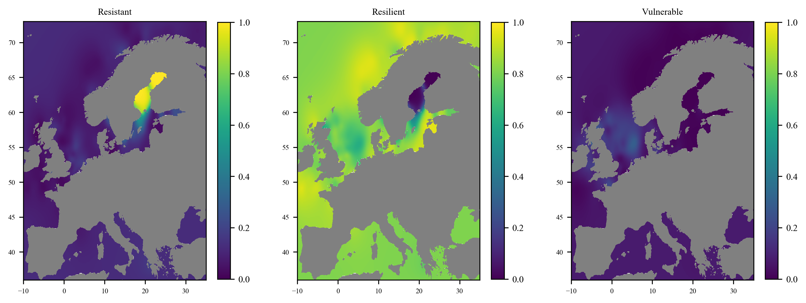
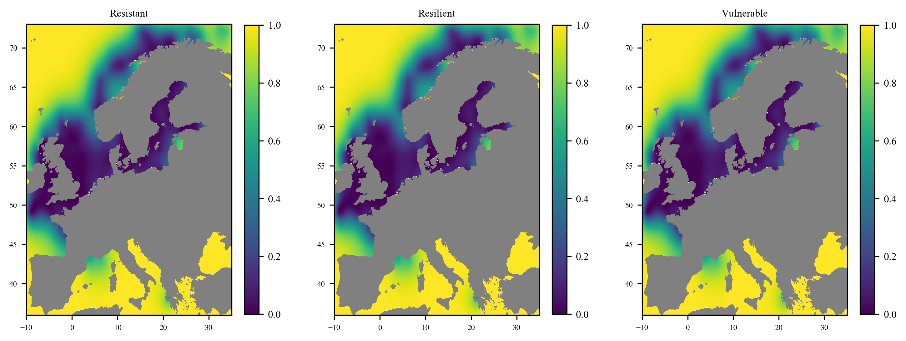

A Showcase for the European Atlas of Marine Life
Plankton gridded products


A work by
Olivier Beauchard (data preparation and processing)
Alexander Barth (code development and data interpolation)
Peter Herman (data preparation and interpretation)
Jean-Marie Beckers (code development)
Charles Troupin (data interpolation and visualisation)


Collect once,
Use many times
And create products with DIVA
1. How do we perform interpolation?
Data interpolation
2. Example of products
Benthic macroinvertebrate
living modes
in European seas
Data sources
Available from EMODnet Biology (see list on the web)
3 main living modes
Resistant
- strong mobility
- short life cycle
- high offspring survival probability
Opportunistic/resilient
- Relatively short life span
- Not very habitat-specific
Vulnerable
- Years/decades to achieve a minimum of reproductive success
- Negatively affected by bottom trawling
Data location
Interpolated fields (relative)
Error fields
Neural network modelling
of Baltic zooplankton abundances
Method: neural network
Using co-variables to help for the interpolation
Main datasets: Zooplankton observations in the Baltic
- the Swedish SHARK database from EMODnet Biology
- the Finnish data from the NOAA Copepod database
- the German and Polish from the HELCOM DOME database
Co-variables
- Dissolved oxygen (from EMODnet Chemistry)
- Salinity (from SeaDataNet)
- Temperature (from SeaDataNet)
- Chlorophyll concentration (MODIS-Aqua from NASA)
- Bathymetry (from GEBCO)
- Distance from coast (from GSFC, NASA)
Examples of fields

Examples of fields

Examples of fields

Examples of fields

3.
Findability
Accessibility
Interoperability
Reusability
Towards reproducibility
Data EMODnet Biology
Tool DIVAnd v2.1.1: http://doi.org/10.5281/zenodo.1407912
Code and procedure Jupyter-notebooks:
Products available for download netCDF files:
https://dox.ulg.ac.be/index.php/s/EvIwSvTwhtJ6Tmu